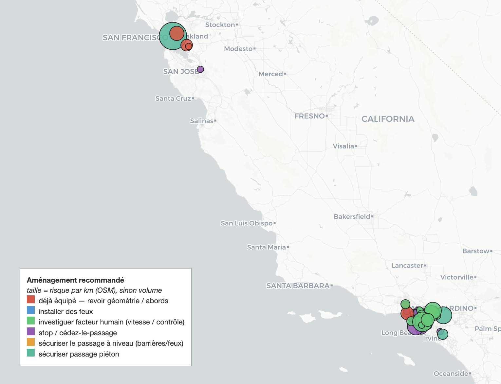
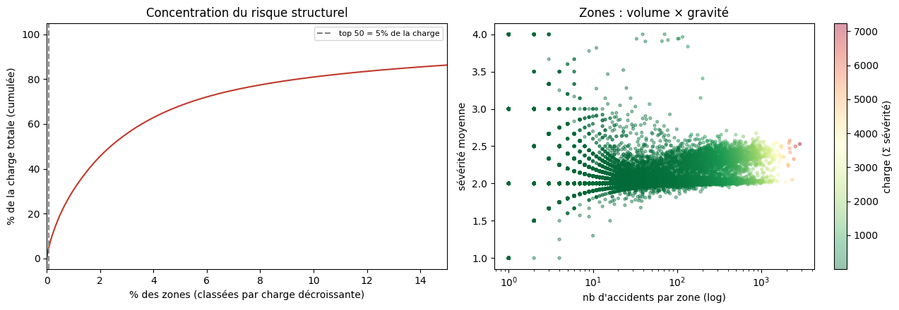
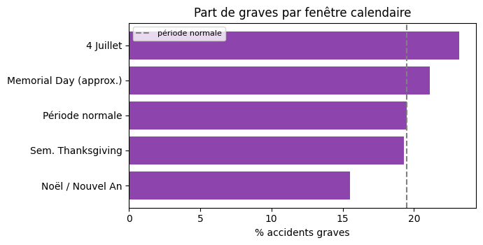
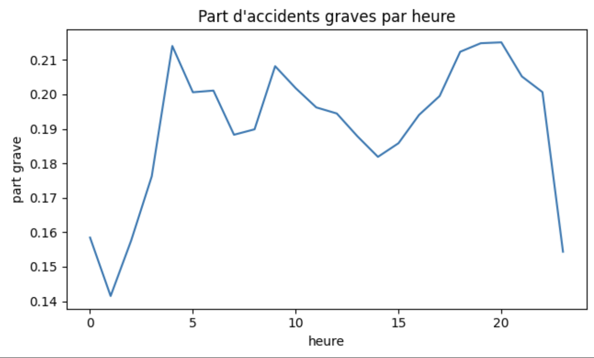

Réduire les accidents par la rénovation d'infrastructure
Rôle : agence de voirie (DOT) - « Où et quoi rénover, avec un budget de travaux limité ?
»
, Données US Accidents 2016-2023 , Pipeline PySpark reproductible de bout en bout
7,73 Maccidents analysés (49 États)
×62concentration du risque (50 zones = 5,3 % de la charge)
ρ = 0,78stabilité des points noirs 2016-19 vs 2020-23
6 860accidents graves évitables (estimation ex-ante, top 50)
OÙ rénover - le risque est concentré et stable

50 zones prioritaires (Californie, démo) - couleur = aménagement recommandé, taille =
risque par km de voirie (OSM).

Grille H3 ~0,7 km² (l'échelle d'un carrefour) : une infime fraction des 58 857 zones porte
l'essentiel de la charge.
Validé : les 50 zones restent toutes dans le top 5 % sur la période suivante
(Spearman ρ = 0,776) -> risque structurel, pas du bruit. Exposition OSM (accidents/km) pour distinguer «
dangereux » de « juste fréquenté ».
Effet net de chaque équipement sur P(accident grave) - odds ratios ajustés (rég.
logistique, IC 95 %, n=300 000). OR < 1 = protecteur.
Une moyenne brute dirait que les feux « aggravent » (ils sont là où c'est dense). Le modèle de gravité
(5 modèles comparés, split temporel, ×2 vs plancher) sert de moteur de preuve : odds ratios +
g-computation concordent (10/12) - passage piéton −20 pts, stop −19 pts de probabilité de
gravité.
Prescription par zone : aléa local × mesure protectrice manquante × effet ajusté conditionnel ->
impact en graves évités.
Zone
Accidents
Aléa local
Recommandation
Impact estimé*
#2
2 543
carrefour
stop / cédez-le-passage
≈ 505 graves évités
#3
2 431
carrefour
stop / cédez-le-passage
≈ 483
#8
2 323
carrefour
stop / cédez-le-passage
≈ 461
*ex-ante, associationnel. 6 types de recommandations sur les 50 zones - dont 13 zones «
facteur humain » signalées honnêtement.
QUAND - conjoncturel ≠ structurel

Contre-intuitif : la gravité ne s'emballe pas pendant les fêtes (Noël : 15,5 % de graves vs
19,5 % en temps normal) - et le brouillard affiche la part de graves la plus basse (16 %).

La route pardonne moins quand elle est vide : au plus fort de l'après-midi (14h), la part
d'accidents graves recule à 18,2 %, tandis que le creux de 4h du matin culmine à 21,4 % - l'absence de trafic
favorise des vitesses qui transforment l'erreur en accident grave.
Météo & calendrier = risque conjoncturel -> panneaux à messages variables, pas de
travaux. On le visualise, on ne le modélise pas : le budget rénovation reste sur le structurel.